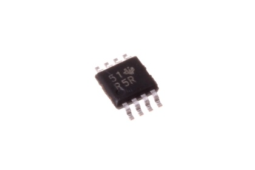
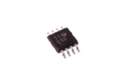
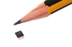
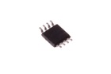

8 Pin SMD (MSOP) LMV358 Op Amp - OAM358

Summary
Name: 8 Pin SMD (MSOP) LMV358 Op Amp
ID: OPAM-MS08-X-KLMV358-01
Hex ID: OAM358
WebPage: https://github.com/oomlout/oomlout-OOMP/wiki/OPAM-MS08-X-KLMV358-01
Short URL: http://oom.lt/OAM358
Revision History: https://github.com/oomlout/oomlout-OOMP/blob/master/parts/OPAM-MS08-X-KLMV358-01/
| Type |
Size |
Color |
Description |
Index |
OPAM
Op Amp |
MS08
8 Pin SMD (MSOP) |
X
|
KLMV358
LMV358 |
01
|
Images



About
This part is awaiting a description.
Specifications
| Info |
Value |
| Type |
Op Amp |
| Size |
8 Pin SMD (MSOP) |
| Description |
LMV358 |
| Width |
3 mm |
| Height |
1.1 mm |
| Length |
4.9 mm |
| Package Marking |
R5# |
| Number of Pins |
8 |
Extra Details
Spotted a mistake, want to add more? Let us know oomp@oomlout.com
All images and resources are licensed [CC BY-SA] unless otherwise stated (ie. the datasheets)